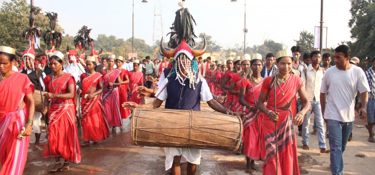
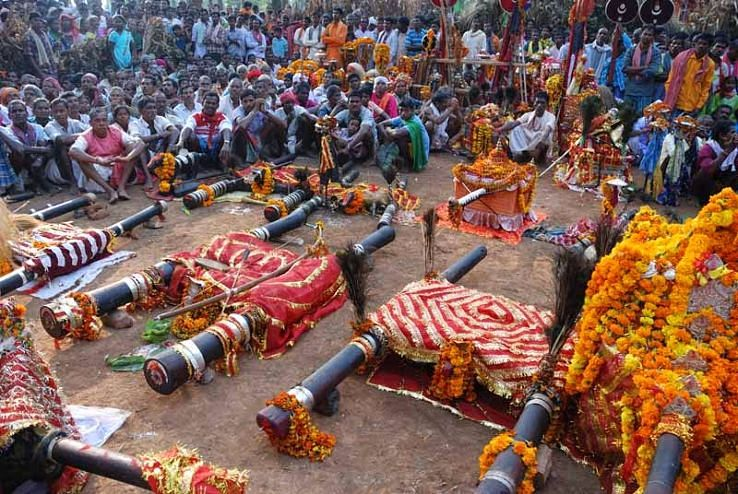

Bastar Dussera is the unique cultural trait of Chhattisgarh. Celebrated by the local people of the state with sufficient vigor, the festival of Dussera connotes to the supreme power of goddess Danteswari. During Dussera, the inhabitants of Bastar organizes special worship ceremonies at the Danteswari temple of Jagadalpur.

It is believed that Maharaja Purushaottam Deo first initiated the festival of Dussera in the early hours of 15th century. From since then it became customary for all th tribes of Bastar to take part in this holy festival. During the entire ten days of the occasion, the respected Raj family of Bastar arrange worship sessions in which the ancient arms of the Goddess Danteswari are treated as divine elements. One of the inherent traits of Bastar Dussera is that the control of the state is formally transfered to the Diwan keeping the Zamindar and similar important personalities as witnesses. Kunwar amavasya is the first day of dussera. On the night of the first day the customary transfer of control takes place. A mystique characteristics of this ceremony is that before handing over the power to the Diwan, a girl who is believed to have possessed the spiritual powers is asked for permission. This girl is seen with a wooden sword and stands in a war-like posture. The second day of dussera is called pratipada which is followed by aarti and salami. On the ninth day, the Raja of Bastar welcomes goddess Danteswari who comes to the entrance of the city in a doli or palanquin. The tenth day of the festival is called dussera when the Raja organizes a darbar where people come and present their requests. Also aarti ceremony is held on the last day of dussera. The dussera festival is a famous event of India. But the dussera of Bastar is completely different from the commonly known festival of the country. Bastar dussera celebrate the divine bliss of Goddess Danteswari who is the revered deity of all the existing tribes of Chhattisgarh.
Bastar Lokotsav is a vibrant festival of Chhattisgarh which involves the representation of the folk culture of the state. The lokotsav which occurs after the end of rainy season, attracts large number of tribal groups who come to participate in this festival from remote villages of Chhattisgarh. Handicraft items are exhibited in the Bastar Lokotsav. Connoting the festival of the folk people of Chhattisgarh, lokotsav of Bastar starts with a enticing array of cultural events. The jagadalpur area of Chhattisgarh organizes a special programme called Basta Parab in which dance and song variations of the tribal communities can be seen. The Bastar Lokotsav is a kind of platform on which the tribal traditions and culture get a recognition. During the loktsav, people from all other adjoining districts of the state come to enjoy the charismatic charm of the occasion. Also, tribes of other states of India are found participating enthusiastically in the Bastar Lokotsav. The exquisite handicrafts which are quite rare are also sold by the tribal groups of Bastar during the festival. Sometimes, tourists from other countries are also found in the Bastar Lokotsav. This indicates the immense popularity of the lokotsav that has crossed the regional boundaries. As a colorful and historical cultural identity, Bastar Lokotsav also enhances the tourism prospects of Chhattisgarh. In the promotional campaigns and in the sightseeing portals of the state, mention of Bastar Lokotsav is found more often than not. The government of Chhattisgarh always encourages such tribal festivals in the state. Bastar Lokotsav adds a vibrnat diemnsion to the festivals of the state.
The Charama and Kurna communities of Kanker district, tribes of Bastar and people of Bhanupratappur, Narayanpur, Kondagaon and Antagrah celebrate the Madai Festival in the state of Chhattisgarh. From the month of December to March, the festival of Madai tours from one place of the state to another. The local tribes of the state along with other communities worship the presiding deity during the festival. In the beginning of Madai Festival, the tribal people of Chhattisgarh launch a procession on an open field where large number of devotees and general tourists gather to witness the rituals. After the end of the procession, the priest or similar figure starts worshiping the goddess. While the puja ceremony goes on, the onlookers maintain silence and also offer prayers to the feet of the deity. When the worshiping finishes, several cultural events like folk dance, drama, songs etc starts taking place in the open space. As a huge number of villagers come to enjoy the ecstasies the occasion, so Madai Festival is always organized on a vast stretch of land. The Bastar region of Chhattisgarh marks the beginning of Madai Festival. From Bastar the festival goes to the Kanker district of the state from where it is again shifted to Narayanpur, antagarh and Bhanupratappur. Keshkal, bhopalpattnam and Kondagaon welcome Madai Festival in the month of March when it comes to its final end. Since the Madai Festival goes from one location to another, each and every tribe and other human groups of Chhattisgarh enjoy the unique pleasures of the occasion. Derived from the old customs and traditions of the state, Madai Festival today has become a popular religious event of Chhattisgarh in particular and India in general.
Maharaj Ramachandra who was one of the members of Nag Kingdom of Chhattisgarh established the famous temple of Raipur where the Bhoramdeo Festival is celebrated toady. Situated at a distance of around 135 km from the city of Raipur, the temple becomes a live manifestation of vigor and celebration in the last week of March when Bhoramdeo festival takes place. Compared to the historically famous Khajuraho temples, the edifice of Bhoramdeo temple reflects the architectural mastery of the ancient rulers of Chhattisgarh. As one of the prime symbol of religious shrines of the state, the temple becomes a vibrant platform of cultural extravaganza. The local people of the state come in large numbers to the premises of the temple to witness the aide array of festive events. From dance dramas to folk songs, every type of recreational activity is arranged withing the compounds of the Bhoaramdeo temple. Not only the inhabitants of Chhattisgarh, but also people from other states of India visit the temple complex during the Bhoramdeo Festival. Those who are not familiar with the religious ceremonies of Chhattisgarh can get some vital clues of the same through the Bhoramdeo Festival. Wearing bright clothes and accessories, when the people of Chhattisgarh gather in the temple of Bhoramdeo, it seems like a multi-hued stream has been unleashed in the place. Like any other cultural occasion of the state, Bhoramdeo Festival also reflects the inherent qualities of the socio-cultural dynamics of Chhattisgarh which in turn helps in providing a significant insight into the festive spirit of the place.
Jagadalpur of Bastar district in Chhattisgarh is the place where the Goncha Festival is celebrated. Connoting a special fruit of Chhattisgarh, Goncha is used as mock bullet by the tribes of the state who celebrate the festival in July. Since Goncha Festival occurs at the same time when Rath Yatra of Hindus is celebrated, so it is also referred as the Chariot festival.

Goncha Festival is primarily a cultural trait of the tribal communities of the state of Chhattisgarh. However, as the festival starts gaining momentum, people from all corners of the state flock to Bastar district. Enjoying the essence of the festival through various cultural activities, the local people completely engross themselves in the very aura of Goncha Festival.One of the interesting part of the festival of Goncha is that the tribal people make fake pistols with bamboo and use the goncha fruit as artificial bullets. As a compulsory custom, the men target each other and shoot the bullets with the help of the bamboo pistols. The onlookers take the pleasure of the sight as it is a fun game of the tribal communities.
The Indian subcontinent is noted for a myriad reasons. One of them being the cultural diversity underlying which there exists an unbreakable spirit of unity. Each state in India celebrates a number of festivals unique to its own culture and tradition. Likewise Chhattisgarh celebrates Teeja festival with elaborate grandeur.Teeja is essentially a Rajashthani festival. The popularity of this festival is evinced by the grand nationwide celebrations. Even the quiet tribal paradise of Chhattisgarh is not spared. Teeja celebrations commence in the months of July and August to welcome the first monsoon downpours of the year.Teeja festival is primarily confined to the female world from which the menfolk are strictly excluded. Colorful and gay procession of the women dressed in vibrant garments and elaborately adorned fill the streets and a general atmosphere of vivacity and enjoyment prevails. The women gossip amongst themselves and frolic around the quintessential Indian bazaars dressed in all their finery.